微信公众号[深容Pubmed文献检索] 1. 此处右键：选菜单【翻成中文（简体）】 2. 翻译后，此处右键：选菜单【打印...】成PDF格式
建议屏幕分辨率：1920X1080；如果屏幕太小，可以按Ctrl + 或 Ctrl -缩放网页。

Software Construction
Chapter 9: Software Refactoring
9.1 Code Smells Refactoring
Xu Hanchuan
xhc@hit.edu.cn
May 20, 2019
Outline
▪ What is refactoring?
▪ Code smells
▪ Code review
▪ Summary
9.1 Code Smells Refactoring

Software Construction
Objectives of this lecture

Software Construction
1 What is refactoring?
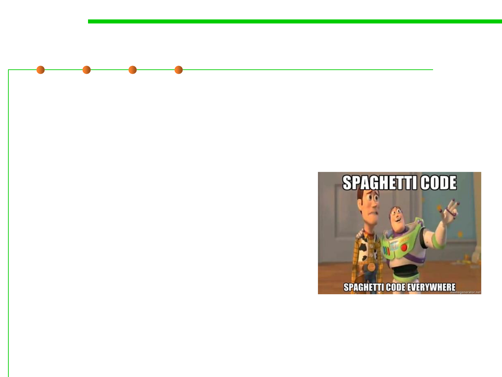
Problem: "Bit rot"
9.1 Code Smells Refactoring
▪ After several months and new versions, many codebases reach one
of the following states:
– Rewritten : Nothing remains from the original code.
– Abandoned : Original code is thrown out, rewritten from scratch.
▪ Why?
– Systems evolve to meet new
needs and add new features
– If the code's structure does
not also evolve, it will "rot"
– This can happen even if the code was initially reviewed and well-designed
at the time of check-in
 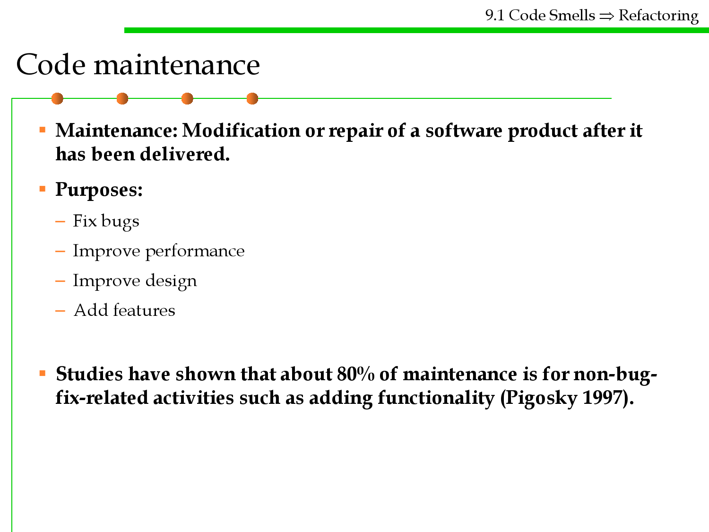
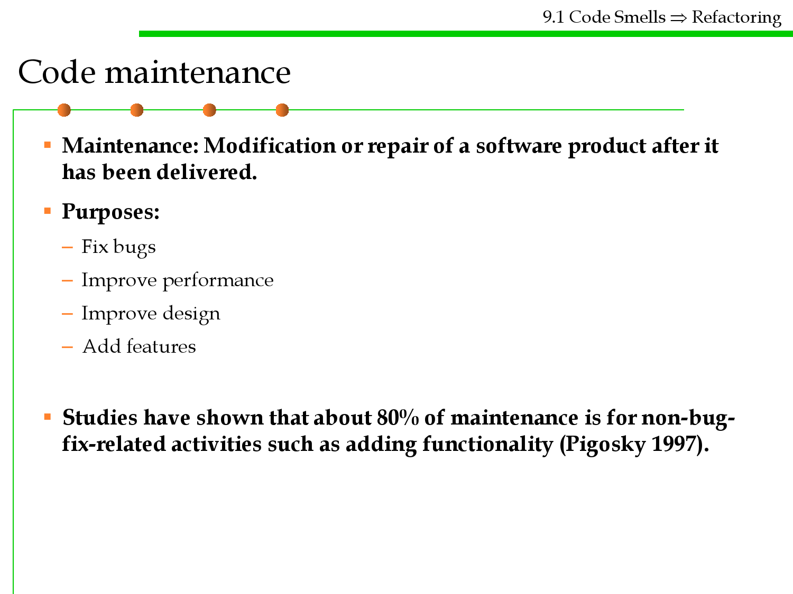
Code maintenance
9.1 Code Smells Refactoring
▪ Maintenance: Modification or repair of a software product after it
has been delivered.
▪ Purposes:
– Fix bugs
– Improve performance
– Improve design
– Add features
▪ Studies have shown that about 80% of maintenance is for non-bug-
fix-related activities such as adding functionality (Pigosky 1997).

Maintenance is hard
9.1 Code Smells Refactoring
▪ It's harder to maintain code than write your own new code.
– “House of cards" phenomenon (don't touch it!)
– Must understand code written by another developer,
or code you wrote at a different time with a different mindset
– Most developers dislike code maintenance
▪ Maintenance is how developers spend much of their time.
▪ It pays to design software well and plan ahead so that later
maintenance will be less painful.
– Capacity for future change must be anticipated
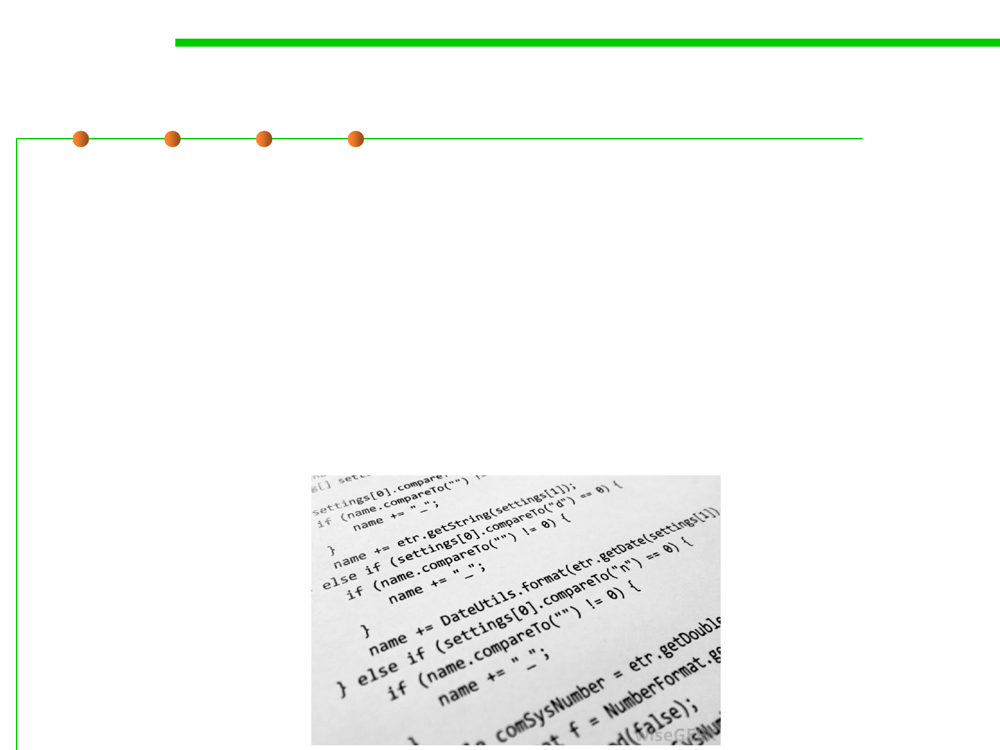
What is “refactoring”?
9.1 Code Smells Refactoring
▪ Chikosfky and Cross: “the transformation from one representation
to another at the same relative abstraction level, while preserving
the subject system’s external behavior (functionality and
semantics)”
▪ Griswold: “source-level structural transformations that are
guaranteed to preserve the meaning of programs”
▪ Opdyke: “program restructuring operations that preserves the
behavior of a program”

Refactoring
9.1 Code Smells Refactoring
▪ Refactoring is the process of changing a software system in such a
way that it does not alter the external behavior of the code yet
improves its internal structure.
– Incurs a short-term time/work cost to reap long-term benefits, and a long-
term investment in the overall quality of your system.
▪ Refactoring is:
– restructuring (rearranging) code...
– ...in a series of small, semantics-preserving transformations (i.e. the code
keeps working)...
– ...in order to make the code easier to maintain and modify
▪ Refactoring is not just any old restructuring
– You need to keep the code working
– You need small steps that preserve semantics
– You need to have unit tests to prove the code works
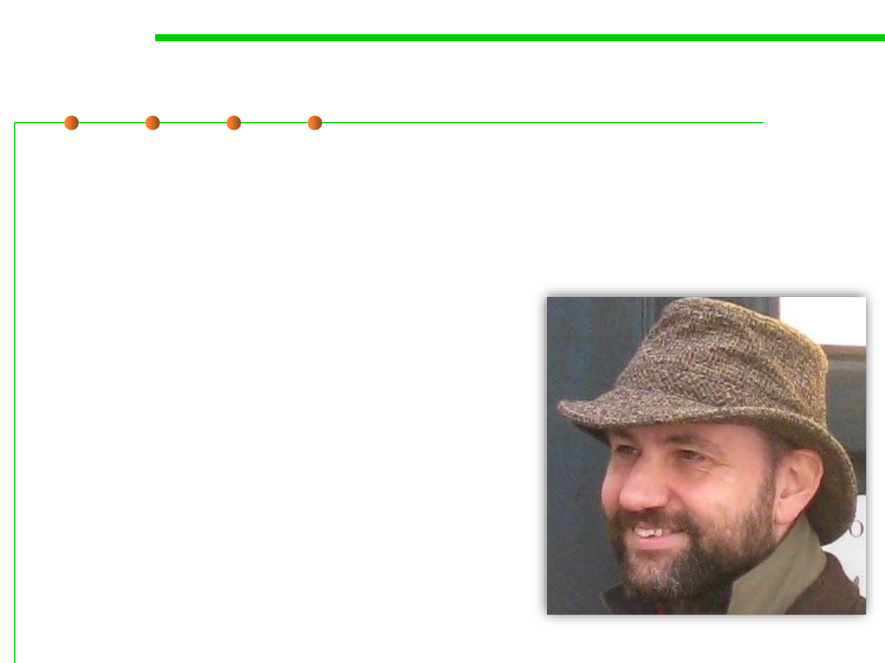
Code refactoring
9.1 Code Smells Refactoring
▪ Code refactoring is the process of restructuring existing source
code without changing its external behavior.
▪ Refactoring improves nonfunctional attributes of the software.
▪ Advantages include improved code
readability and reduced complexity;
▪ These can improve source-code
maintainability and create a more
expressive internal architecture or
object model to improve extensibility.
Martin Fowler (1963-)
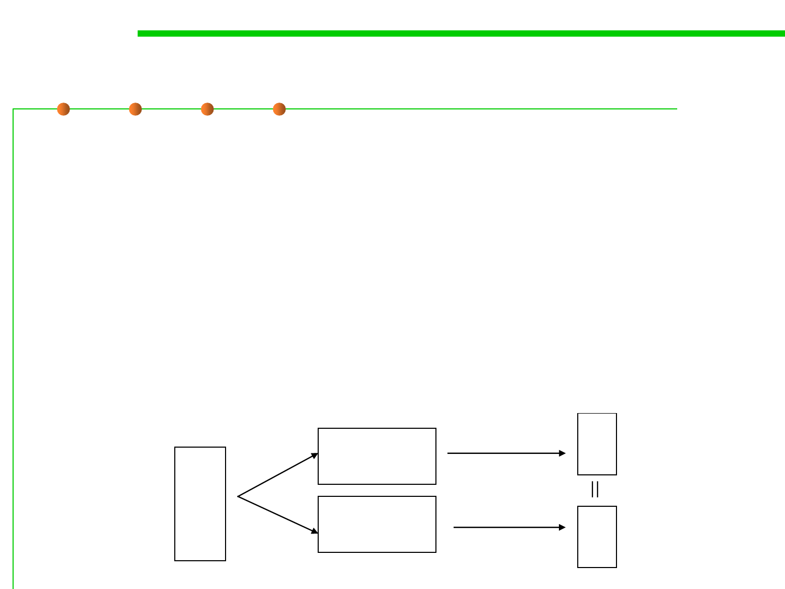
Refactoring
9.1 Code Smells Refactoring
▪ Refactoring is not the same thing as:
– Adding features
– Debugging code
– Rewriting code
▪ Refactoring is “Behavior Preservation”
– A refactoring is a parameterized behavior-preserving program
transformation
– Approaches to behavior preservation may perform checks either statically
or dynamically
Input
1+1
Original
System
2
…
2-3
5+3
Refactored
4*6
System
2
…
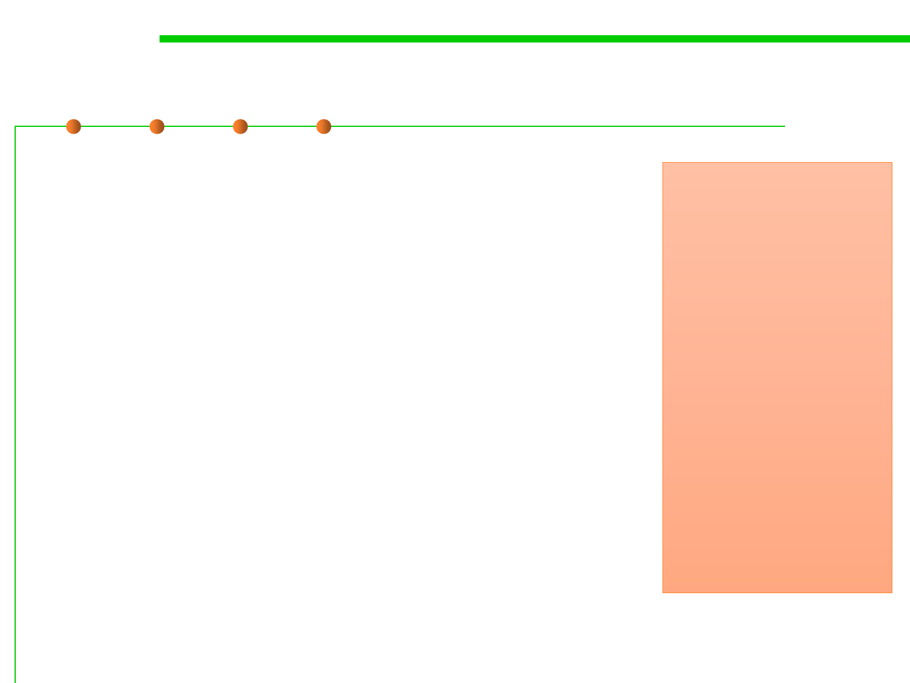
Why refactor?
9.1 Code Smells Refactoring
▪ Why fix a part of your system that isn't broken?
▪ Each part of your system's code has 3 purposes:
1. to execute its functionality,
2. to allow change,
3. to communicate well to developers who read it.
– If the code does not do one or more of these, it is
"broken."
▪ Refactoring:
– Improves software's design
– Makes it easier to understand
Any fool can
write code that
a computer can
understand.
Good
programmers
write
code that
humans can
understand.
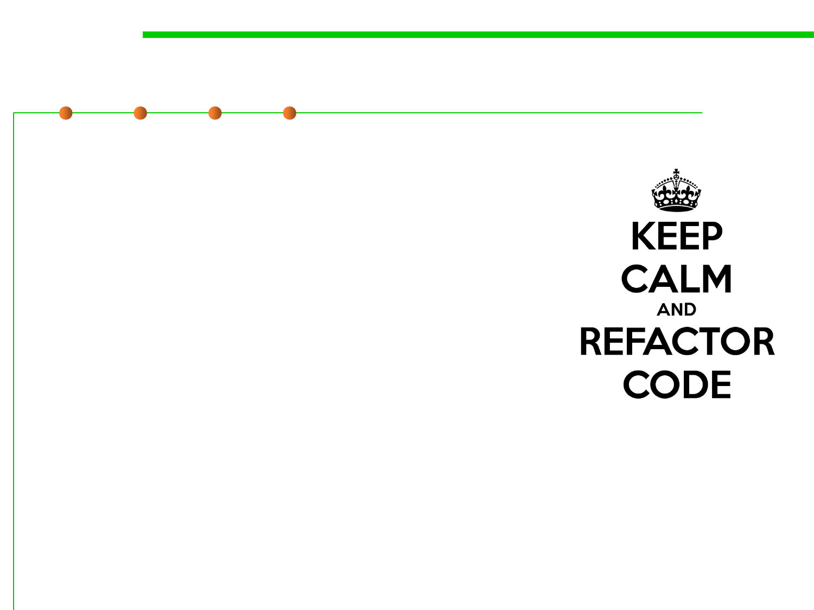
Objectives of Code refactoring
9.1 Code Smells Refactoring
▪ Make it easier to maintain
▪ Make it easier to comprehend
▪ Breakdown of modularity --- crosscutting
modification (non-localized)
▪ Painful & tedious to write (to add code for a bug
fix / feature addition)
▪ Generalize / keeping the program OO
▪ Design conformance
▪ Performance

When to refactor?
9.1 Code Smells Refactoring
▪ When is it best for a team to refactor their code?
– Best done continuously (like testing) as part of the process
– Hard to do well late in a project (like testing)
– Or say, any time that you see a better way to do things (“Better” means
making the code easier to understand and to modify in the future)
▪ Refactor when you identify an area of your system that:
– Isn't well designed
– Isn't thoroughly tested, but seems to work so far
– Now needs new features to be added
– Detect a “bad smell”
▪ You should not refactor:
– Stable code (code that won’t ever need to change)
– Someone else’s code (Unless you’ve inherited it and now it’s yours)

Example 1: switch statements
9.1 Code Smells Refactoring
▪ switch statements are very rare in properly designed object-
oriented code
– Therefore, a switch statement is a simple and easily detected “bad smell”
– Of course, not all uses of switch are bad
– A switch statement should not be used to distinguish between various
kinds of object
▪ There are several well-defined refactorings for this case
– Replace conditional with polymorphism
– Motivation: You have a conditional that chooses different behavior
depending on the type of an object.
– Technique: Move each leg of the conditional to an overriding method in a
subclass. Make the original method abstract.

Example 1, continued
9.1 Code Smells Refactoring
class Animal {
final int MAMMAL = 0, BIRD = 1, REPTILE = 2;
int myKind; // set in constructor
...
String getSkin() {
switch (myKind) {
case MAMMAL: return "hair";
case BIRD: return "feathers";
case REPTILE: return "scales";
default: return "integument";
}
}
}

Example 1, improved
9.1 Code Smells Refactoring
class Animal {
String getSkin() { return "integument"; }
}
class Mammal extends Animal {
String getSkin() { return "hair"; }
}
class Bird extends Animal {
String getSkin() { return "feathers"; }
}
class Reptile extends Animal {
String getSkin() { return "scales"; }
}

How is this an improvement?
9.1 Code Smells Refactoring
▪ Adding a new animal type, such as Amphibian, does not require
revising and recompiling existing code
▪ Mammals, birds, and reptiles are likely to differ in other ways, and
we’ve already separated them out (so we won’t need more switch
statements)
▪ We’ve gotten rid of the flags we needed to tell one kind of animal
from another
▪ Basically, we’re now using Objects the way they were meant to be
used

JUnit tests
9.1 Code Smells Refactoring
▪ As we refactor, we need to run JUnit tests to ensure that we haven’t
introduced errors
public void testGetSkin() {
assertEquals("hair", myMammal.getSkin());
assertEquals("feathers", myBird.getSkin());
assertEquals("scales", myReptile.getSkin());
assertEquals("integument", myAnimal.getSkin());
}
▪ This should work equally well with either implementation
▪ The setUp() method of the test fixture may need to be modified

Refactoring example, 2
9.1 Code Smells Refactoring
▪ Move a method:
– Motivation: A method is, or will be, using or used by more features of
another class than the class on which it is defined.
– Technique: Create a new method with a similar body in the class it uses
most. Either turn the old method into a simple delegation, or remove it
altogether.
Class 1
Class 1
aMethod()
Class 2
Class 2
aMethod()
Refactoring example, 3
9.1 Code Smells Refactoring
▪ Introduce Null Object
– Motivation: You have many checks for null
– Technique: Replace the null value with a null object.
Customer c = findCustomer(…);
...
if (customer == null) {
Completely eliminated the if
statement by replacing checks for
name = “occupant”;
null with a null object that does
} else {
name = customer.getName();
the right thing for “null” values.
}
public class NullCustomer extends Customer {
if (customer == null) {
…
public String getName() {
return “occupant”;
}
--------------------------------------------
Customer c = findCustomer(…);
name = c.getName();

Refactoring example 4
9.1 Code Smells Refactoring

Don’t Repeat Yourself (DRY)
9.1 Code Smells Refactoring
▪ Duplicated code is a risk to safety. If you have identical or very
similar code in two places, then the fundamental risk is that there’s a
bug in both copies, and some maintainer fixes the bug in one place
but not the other.
▪ Copy-and-paste is an enormously tempting programming tool, and
you should feel a frisson of danger run down your spine every time
you use it. The longer the block you’re copying, the riskier it is.
▪ Don’t Repeat Yourself, or DRY for short, has become a programmer’s
mantra.
– Some of the repetition in dayOfYear() is repeated values. Suppose our
calendar changed so that February really has 30 days instead of 28. What
will happen?
– Another kind of repetition in the code is “dayOfMonth+=…“

Fail Fast
9.1 Code Smells Refactoring
▪ Failing fast means that code should reveal its bugs as early as
possible.
– The earlier a problem is observed (the closer to its cause), the easier it is to
find and fix.
– Static checking fails faster than dynamic checking, and dynamic checking
fails faster than producing a wrong answer that may corrupt subsequent
computation.
▪ The dayOfYear function doesn’t fail fast — if you pass it the
arguments in the wrong order, it will quietly return the wrong
answer.
– In fact, the way dayOfYear is designed, it’s highly likely that a non-
American will pass the arguments in the wrong order.
– It needs more checking — either static checking or dynamic checking.

Fail Fast
9.1 Code Smells Refactoring
▪ What are the results of the following invocations? (Expected input
is February 9, 2019)
– dayOfYear(2, 9, 2019)
– dayOfYear(1, 9, 2019)
– dayOfYear(9, 2, 2019)
– dayOfYear(“February”, 9, 2019)
– dayOfYear(2019, 2, 9)
– dayOfYear(2, 2019, 9)
▪ Static error? Dynamic error? Wrong answer? Right Answer?
Fail Fast
9.1 Code Smells Refactoring
▪ Which of the following changes would make the code fail faster if it
were called with arguments in the wrong order?

Avoid Magic Numbers
9.1 Code Smells Refactoring
▪ There are really only two constants that computer scientists
recognize as valid in and of themselves: 0, 1, and maybe 2.
▪ All other constants are called magic because they appear as if out of
thin air with no explanation.
▪ One way to explain a number is with a comment, or to declare the
number as a named constant with a good, clear name.
– 2, …, 12 would be far more readable as FEBRUARY, …, DECEMBER.
– 30, 31, 28 would be more readable if they were in a data structure like an
array, list, or map, e.g. MONTH_LENGTH[month].
– The mysterious numbers 59 and 90 are particularly pernicious examples of
magic numbers. Not only are they uncommented and undocumented,
they are actually the result of a computation done by hand by the
programmer. Explicit computations like 31 + 28 make the provenance of
these mysterious numbers much clearer.

One Purpose For Each Variable
9.1 Code Smells Refactoring
▪ The parameter dayOfMonth is reused to compute a very different
value — the return value of the function, which is not the day of
the month.
▪ Don’t reuse parameters, and don’t reuse variables.
– Variables are not a scarce resource in programming.
– Introduce them freely, give them good names, and just stop using them
when you stop needing them.
– You will confuse your reader if a variable that used to mean one thing
suddenly starts meaning something different a few lines down.
▪ Method parameters should generally be left unmodified.
– It’s a good idea to use final for method parameters, and as many other
variables as you can.
– The final keyword says that the variable should never be reassigned, and
the Java compiler will check it statically.

But, refactoring is dangerous!
9.1 Code Smells Refactoring
▪ Refactoring CAN introduce problems, because anytime you
modify software you may introduce bugs!
▪ Management thus says:
– Refactoring adds risk!
– It’s expensive – we’re spending time in development, but not “seeing” any
external differences? And we still
have to retest?
– Why are we doing this?
Who initiated “refactoring”?
9.1 Code Smells Refactoring
▪ Ward Cunningham and Kent Beck influential people in Smalltalk
▪ Kent Beck – responsible for Extreme Programming
▪ Ralph Johnson a professor at U of Illinois and part of “Gang of
Four”
▪ Bill Opdyke – Ralph’s Doctoral Student
▪ Martin Fowler - http://www.refactoring.com
– Refactoring : Improving the Design of Existing Code

Software Construction
2 Code smells (code hygiene)
Signs you should refactor
9.1 Code Smells Refactoring
▪ Code is duplicated
▪ A routine is too long
▪ A loop is too long or deeply nested
▪ A class has poor cohesion
▪ A class uses too much coupling
▪ Inconsistent level of abstraction
▪ Too many parameters
▪ To compartmentalize changes (change one place → must change
others)
Signs you should refactor
9.1 Code Smells Refactoring
▪ To modify an inheritance hierarchy in parallel
▪ To group related data into a class
▪ A "middle man" object doesn't do much
▪ Poor encapsulation of data that should be private
▪ A weak subclass doesn't use its inherited functionality
▪ A class contains unused code

Code "smells“ (hygiene)
9.1 Code Smells Refactoring
▪ Duplicated Code
▪ Long Method
▪ Large Class
“A code smell is a surface indication
that usually corresponds to a deeper
problem in the system”.
——Martin Fowler
▪ Long Parameter List
▪ Divergent Change
▪ Shotgun Surgery (change one place → must change others)
▪ Feature Envy
▪ Data Clumps
▪ Primitive Obsession
▪ Switch Statements
▪ Parallel Inheritance Hierarchies
 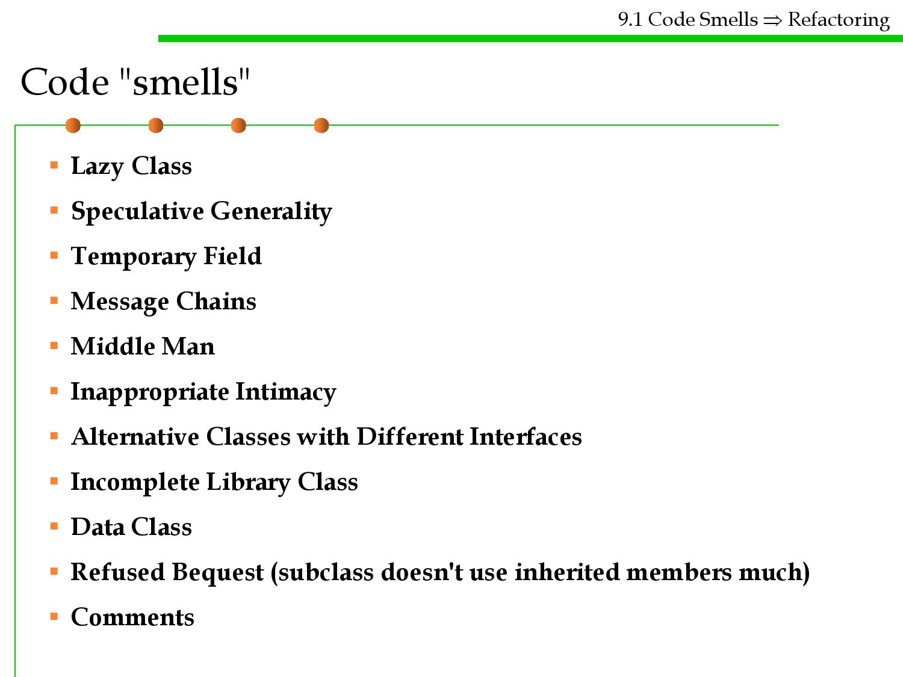
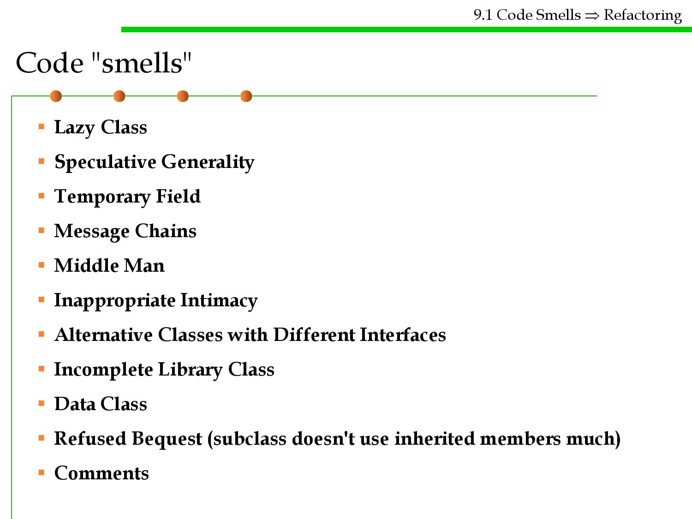
Code "smells"
9.1 Code Smells Refactoring
▪ Lazy Class
▪ Speculative Generality
▪ Temporary Field
▪ Message Chains
▪ Middle Man
▪ Inappropriate Intimacy
▪ Alternative Classes with Different Interfaces
▪ Incomplete Library Class
▪ Data Class
▪ Refused Bequest (subclass doesn't use inherited members much)
▪ Comments
9.1 Code Smells Refactoring
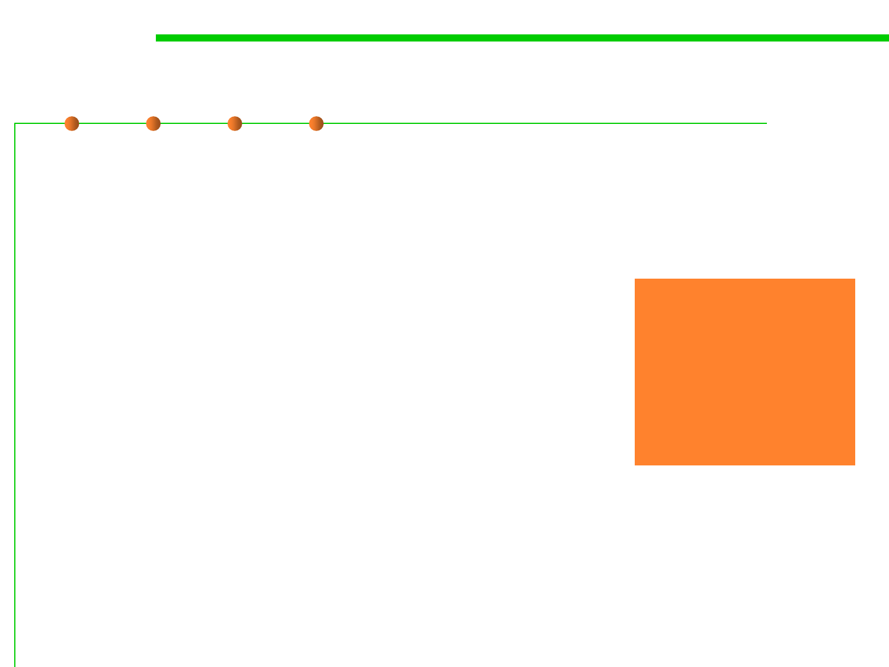 
C
o
9.1 Code Smells Refactoring
m
i
n
Code
Smells
g
u
p
:
C
▪ Duplicated Code
o
d
– The same code structure in more than one place (caused by “code clone”)
e
S
– Bad because if you modify one instance of duplicated code but not the
m
e
others, you (may) have introduced a bug!
l
l
▪ Long Method
s
Whenever we feel
the need to
– Long methods are more difficult to understand
comment
– Performance concerns with respect to lots of short
something, we
methods are largely obsolete
write a method
▪ Large Class
instead
– Classes try to do too much, which reduces cohesion
– Often shows up as too many instance variables

C
o
9.1 Code Smells Refactoring
m
i
n
Code
Smells
g
u
p
:
C
▪ Long Parameter List
o
d
– Hard to understand, can become inconsistent and difficult to use.
e
S
m
▪ Divergent Change
e
l
– Related to cohesion
l
s
– Symptom: one type of change requires changing one subset of methods;
another type of change requires changing another subset (One class is
commonly changed in different ways for different reasons).
▪ Shotgun Surgery
– Every time you make a kind of change, you have to make a lot of little
changes to a lot of different classes.
– It’s hard to identify and make a complete change.

C
o
9.1 Code Smells Refactoring
m
i
n
Code
Smells
g
u
p
:
C
▪ Feature Envy
o
d
– A method seems more interested in a class other than the one it actually is
e
in (e.g., to invoke many getter() methods on another object to calculate
S
m
some values.
e
l ▪ Data Clumps
l
s
– Bunches of data that hang around together, e.g., fields in a couple of
classes, parameters in many method signatures
▪ Primitive Obsession
– Code uses built-in types instead of application classes
– Consequences: reduces understandability, long methods, code duplication,
add complexity
▪ Switch Statements
– Often you find the same switch statement scattered about a program in
different places. If you add a new clause to the switch, you have to find all
these switch, statements and change them.

Code Smells
9.1 Code Smells Refactoring
▪ Parallel Inheritance Hierarchies
– A special case of shotgun surgery: every time you make a subclass of one
class, you also have to make a subclass of another.
▪ Lazy Class
– A class that no longer “pays its way”, e.g. may be a class that was
downsized by a previous refactoring, or represented planned functionality
that did not pan out
▪ Speculative Generality
– “Oh I think we need the ability to do this kind of thing someday”
▪ Temporary Field
– An attribute of an object is only set in certain circumstances; but an object
should need all of its attributes

C
o
9.1 Code Smells Refactoring
m
i
n
Code
Smells
g
u
p
:
M
▪ Message Chains
a
n
– When a client asks one object for another object, it then asks for yet
y
another object, and so on.
m
o
r
– The client is coupled to the structure of the navigation. Any change to the
e
intermediate relationships causes the client to have to change.
c
o ▪ Middle Man
d
e
s
– Most of the methods of a class are delegating to this other class.
m
e
▪ Inappropriate Intimacy
l
l
– Classes become far too intimate and spend too much time delving in each
s
others‘ private parts.
▪ Alternative Classes with Different Interfaces
▪ Incomplete Library Class

Code Smells
9.1 Code Smells Refactoring
▪ Data Class
– These are classes that have fields, getting and setting methods for the
fields, and nothing else; they are data holders, but objects should be about
data AND behavior
▪ Refused Bequest
– A subclass ignores most of the functionality provided by its superclass
– Subclass may not pass the “IS-A” test
▪ Comments (!)
– Comments are sometimes used to hide bad code
• “…comments often are used as a deodorant” (!)
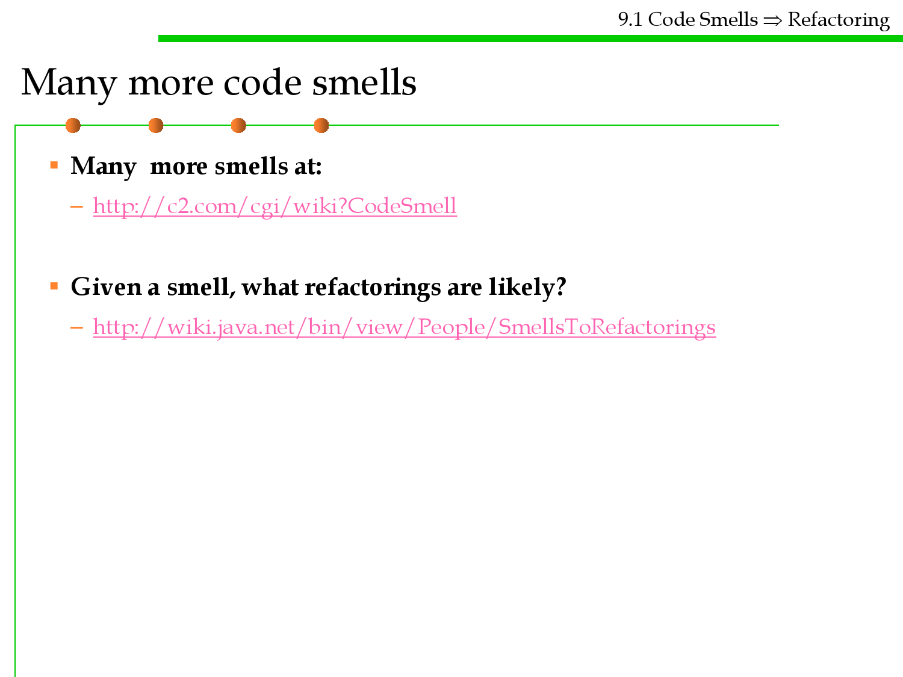
C
o
9.1 Code Smells Refactoring
m
i
n
Many
more
code
smells
g
u
p
:
W
▪ Many more smells at:
h
y
– http://c2.com/cgi/wiki?CodeSmell
u
s
e
t
h
▪ Given a smell, what refactorings are likely?
e
m
– http://wiki.java.net/bin/view/People/SmellsToRefactorings
?

Software Construction
Refactoring process

Assertions-based refactoring
9.1 Code Smells Refactoring
▪ Identify a set of invariants in the program that preserve its behavior
for refactoring
▪ Create a set of conditions which guarantee that these invariants hold
▪ Pre- and postconditions are therefore formulated and checked before
and after refactorings are applied
▪ Are a lightweight and automatic means of verification
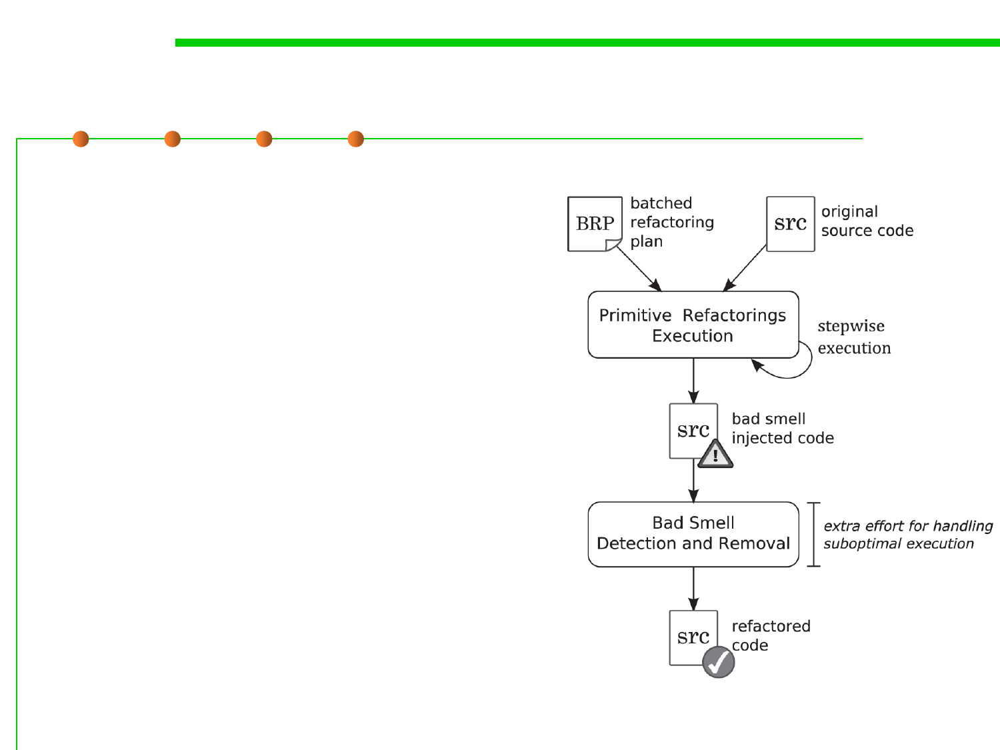
Refactoring process
▪ Identify where the software should be
refactored
▪ Determine which refactorings should
be applied to the identified places
▪ Guarantee that the applied refactoring
preserves behavior
▪ Apply the refactoring
▪ Assess the effect of the refactoring on
quality characteristics of the software
▪ Maintain the consistency between the
refactored program code and other
software artifacts
9.1 Code Smells Refactoring

Refactoring plan, pt 1
9.1 Code Smells Refactoring
▪ Save / backup / checkin the code before you mess with it.
– If you use a well-managed version control repo, this is done.
▪ Write unit tests that verify the code's external correctness.
– They should pass on the current poorly designed code.
– Having unit tests helps make sure any refactor doesn't break existing
behavior (regressions).
▪ Analyze the code to decide the risk and benefit of refactoring.
– If it is too risky, not enough time remains, or the refactor will not produce
enough benefit to the project, don't do it.

Refactoring plan, pt 2
9.1 Code Smells Refactoring
(after completing steps on the previous slide)
▪ Refactor the code.
– Some unit tests may break. Fix the bugs.
– Perform functional and/or integration testing. Fix any issues.
▪ Code review the changes.
▪ Check in your refactored code.
– Keep each refactoring small; refactor one issue / unit at a time.
• helps isolate new bugs and regressions
– Your check-in should contain only your refactor.
• NOT other changes such as adding features, fixing unrelated bugs.
• Do those in a separate check-in.
– (Resist temptation to fix small bugs or other tweaks; this is dangerous.)

"I don't have time!"
9.1 Code Smells Refactoring
▪ Refactoring incurs an up-front cost.
– many developers don't want to do it
– management don't like it; they lose time and gain "nothing"
(no new features)
▪ But...
– well-written code is more conducive to rapid development
(some estimates put ROI at 500% or more for well-done code)
– refactoring is good for programmer morale
• developers prefer working in a "clean house"
Dangers of refactoring
9.1 Code Smells Refactoring
▪ Code that used to be ...
– well commented, now (maybe) isn't
– fully tested, now (maybe) isn't
– fully code reviewed, now (maybe) isn't
▪ Easy to insert a bug into previously working code (regression!)
– a small initial change can have a large chance of error

Regressions
9.1 Code Smells Refactoring
What if refactoring introduces new bugs in previously working
functionality ("regressions")? How can this be avoided?
▪ Code being refactored should have good unit test coverage, and
other tests (system, integration) over it, before the refactor.
– If such code is not tested, add tests first before refactoring.
– If the refactor makes a unit test not compile, port it.
– If the method being tested goes away, the underlying functionality of that
method should still be somewhere. So move the unit test to cover that
new place in the code.
Company/team culture
9.1 Code Smells Refactoring
▪ Organizational barriers to refactoring:
– Many small companies and startups don't do it.
• "We're too small to need it!" ... or, "We can't afford it!"
– Many larger companies don't adequately reward it.
• Not as flashy as adding features/apps; ignored at promotion time
▪ Reality:
– Refactoring is an investment in quality of the company's product and code
base, often their prime assets.
– Many web startups are using the most cutting-edge technologies, which
evolve rapidly. So should the code.
– If a team member leaves or joins (common in startups), ...
– Some companies (e.g. Google) actively reward refactoring.
Refactoring and teams
9.1 Code Smells Refactoring
▪ Amount of overhead/communication needed depends on size of
refactor.
– small refactor: Just do it, check it in, get it code reviewed.
– medium refactor: Possibly loop in tech lead or another dev.
– large refactor: Meet with team, flush out ideas, do a design doc or design
review, get approval before beginning.
▪ Avoids possible bad scenarios:
– Two devs refactor same code simultaneously.
– Refactor breaks another dev's new feature they are adding.
– Refactor actually is not a very good design; doesn't help.
– Refactor ignores future use cases, needs of code/app.
– Tons of merge conflicts and pain for other devs.

Phased refactoring
9.1 Code Smells Refactoring
▪ Sometimes a refactor is too big to do all at once.
– Example: An entire large subsystem needs redesigning.
We don't think we have time to redo all of it at once.
▪ Phased refactoring:
Adding a layer of abstraction on top of legacy code.
– New well-made System 2 on top of poorly made old System 1.
– System 1 remains; Direct access to it is deprecated.
– For now, System 2 still forwards some calls down to System 1 to achieve
feature parity.
– Over time, calls to System 1 code are replaced by new System 2 code
providing the same functionality with a better design.

Refactoring at Google
9.1 Code Smells Refactoring
▪ "At Google, refactoring is very important and necessary/inevitable
for any code base. If you're writing a new app quickly and adding
lots of features, your initial design will not be perfect. Ideally, do
small refactoring tasks early and often, as soon as there is a sign of a
problem."
▪ "Refactoring is unglamorous because it does not add features. At
many companies, people don't refactor because you don't get
promoted for it, and their code turns into hacky beasts."
▪ "Google feels refactoring is so important that there are company-
wide initiatives to make sure it is encouraged and rewarded."

Refactoring at Google
9.1 Code Smells Refactoring
▪ "Common reasons not to do it are incorrect:
– a) 'Don't have time; features more important' -- You will pay more cost, time
in adding features (because it's painful in current design), fixing bugs
(because bad code is easy to add bugs into), ramping up others on code
base (because bad code is hard to read), and adding tests (because bad
code is hard to test), etc.
– b) 'We might break something' -- Sign of a poor design from the beginning,
where you didn't have good tests. For same reasons as above, you should
fix your testing situation and code.
– c) 'I want to get promoted and companies don't recognize refactoring work' --
This is a common problem. Solution varies depending on company. Seek
buy-in from your team, gather data about regressions and flaws in the
design, and encourage them to buy-in to code quality."
▪ "An important line of defense against introducing new bugs in a
refactor is having solid unit tests (before the refactor)."
-- Victoria Kirst, Google
In-Class Exercises
9.1 Code Smells Refactoring
▪ Example from
http://www.codeproject.com/KB/architecture/practicalexp.aspx
▪ Not written up as an inclass exercise, but could start as an example
to find code-smells from.
▪ Article shows refactoring and code smells in action
▪ Code smells exercise also at:
http://vivekagarwal.wordpress.com/2008/06/21/code-smelling-
exercise/#more-105

Question
▪ How to identify “code smells”?
▪ Manually
▪ Automatically
9.1 Code Smells Refactoring

Software Construction
3 Static code review


What is “code review”?
9.1 Code Smells Refactoring
▪ Code review is careful and systematic examination (sometimes
referred to as peer review) of source code by people who are not the
original author of the code.
▪ It is intended to find mistakes overlooked in the initial development
phase, improving the overall quality of software.
▪ Reviews are done in various forms such as pair programming,
informal walkthroughs, and formal inspections.
▪ Industry data indicates that code reviews can accomplish at most an
85% defect removal rate with an average rate of about 65%.

The purposes of code review
9.1 Code Smells Refactoring
▪ Improving the code
– Finding bugs, anticipating possible bugs, checking the clarity of the code,
and checking for consistency with the project’s style standards.
– At Google, you can’t push any code into the main repository until another
engineer has signed off on it in a code review.
▪ Improving the programmer
– Code review is an important way that programmers learn and teach each
other, about new language features, changes in the design of the project or
its coding standards, and new techniques. In open source projects,
particularly, much conversation happens in the context of code reviews.

Formal code review
9.1 Code Smells Refactoring
▪ Formal code review, such as a Fagan inspection, involves a careful
and detailed process with multiple participants and multiple
phases.
– Formal code reviews are the traditional method of review, in
which software developers attend a series of meetings and review code
line by line, usually using printed copies of the material.
– Formal inspections are extremely thorough and have been proven
effective at finding defects in the code under review.

Lightweight code review
9.1 Code Smells Refactoring
▪ Lightweight code review typically requires less overhead than
formal code inspections, though it can be equally effective when
done properly. Lightweight reviews are often conducted as part of
the normal development process:
– Over-the-shoulder – one developer looks over the author's shoulder as the
latter walks through the code.
– Email pass-around – source code management system emails code to
reviewers automatically after checkin is made.
– Pair programming – two authors develop code together at the same
workstation, as it is common in Extreme Programming.
– Tool-assisted code review – authors and reviewers use software tools,
informal ones such as pastebins and IRC, or specialized tools designed for
peer code review.
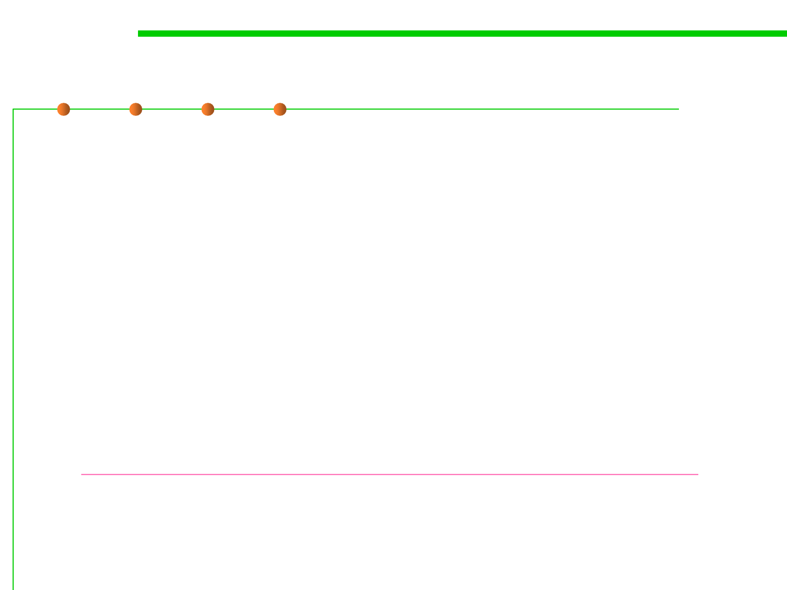
Static program analysis
9.1 Code Smells Refactoring
▪ Static program analysis is the analysis of computer software that is
performed without actually executing programs
– It is performed by an automated tool with human analysis.
– Useful for program understanding, program comprehension, or code
review (software inspections and software walkthroughs).
▪ 30%-70% errors and defects can be identified by static program
analysis.
▪ Techniques: defect pattern matching, type inference, model checking,
data-flow analysis, symbolic execution, etc.
▪ Tools for static program analysis:
– https://en.wikipedia.org/wiki/List_of_tools_for_static_code_analysis

Tools of code review
▪ CheckStyle
▪ FindBugs/SpotBugs
▪ PMD
9.1 Code Smells Refactoring

Software Construction
Summary

Summary
9.1 Code Smells Refactoring
▪ Refactoring improves the design of software
– without refactoring, a design will “decay” as people make changes to a
software system
▪ Refactoring makes software easier to understand
– because structure is improved, duplicated code is eliminated, etc.
▪ Refactoring helps you find bugs
– Refactoring promotes a deep understanding of the code at hand, and this
understanding aids the programmer in finding bugs and anticipating
potential bugs
▪ Refactoring helps you program faster
– because a good design enables progress
 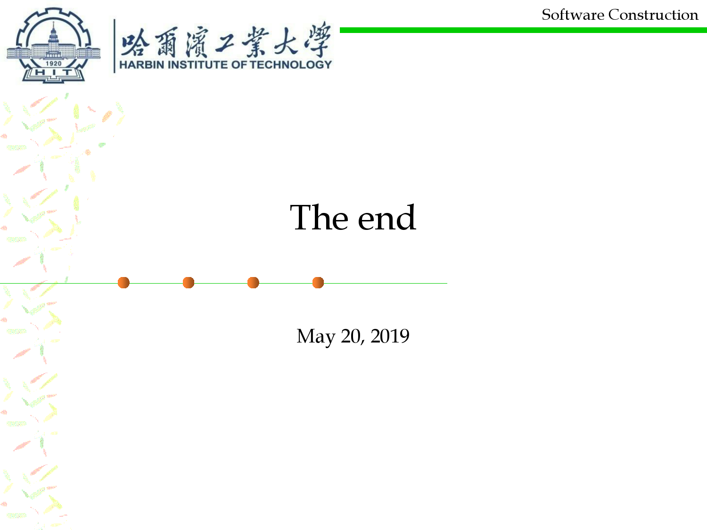
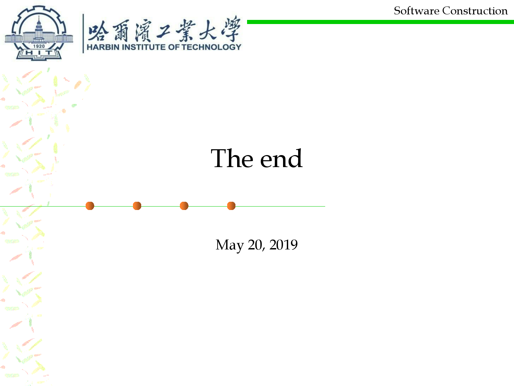
Software Construction
The end
May 20, 2019